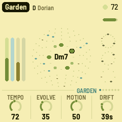
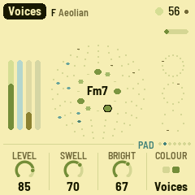
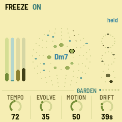

AMB-1
An ambient garden for the M-VAVE FM-1
A generative ambient machine, inspired by Brian Eno's Music for Airports. It plays itself from the moment it's switched on. You don't perform it, you tend it: pick a piece and a scale, take notes out, put them back, and let it grow.



The garden
- Pad. Four breathing voices, a Rhodes or sung voices, each swelling and fading on its own cycle, so the chord forms and dissolves. Now and then it drifts to another chord in the scale.
- Bells. Soft FM bells on four tape loops 13, 17, 23 and 29 beats long, sliding against each other so the melody never quite repeats.
- Bass. The chord's root, low and gliding.
- Pulse. A thump and two hats on Euclidean patterns of 16, 12 and 7 steps.
- Space. A tape echo, a long tape loop and a plate reverb: most of what you hear. REC freezes the chord and lets the reverb ring on forever.
Eight pieces, each remembering how you left it. The keys are the scale: press one to take its note out or put it back. A slow tide between sparse and full, and rests now and then, keep it moving for hours.
To go back to the official firmware, use the installer's "Back to the stock firmware", or M-VAVE's updater, M-UPGRADE, from m-vave.com/download. M-VAVE and FM-1 are trademarks of their owners. AMB-1 is not affiliated with M-VAVE or Brian Eno.